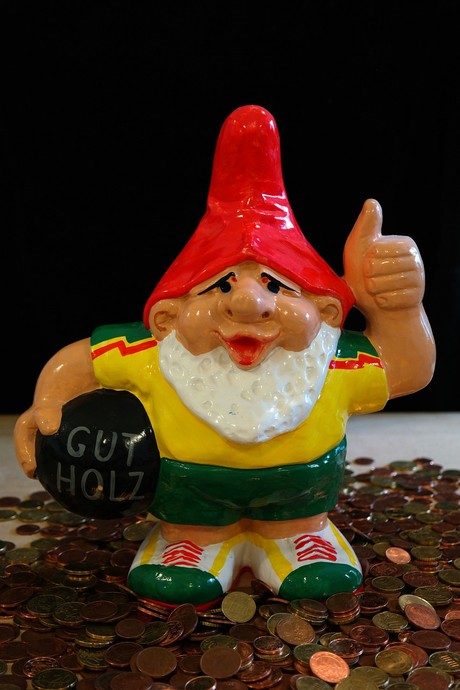

Guía de estudio para el JLPT N5: Adjetivos na parte 1
En este artículo les comparto la lista de adjetivos-na que necesitan aprender para presentar el exámen de japonés básico JLPT N5. A diferencia de el listado de adjetivos i. los adjetivos-na que pueden salir en el exámen son 36, por lo que ésta sección de la guía sólo tendra 2 partes.
Si ésta es tu primera vez leyendo la guía, te invito a conocer las demás secciones que he escrito haciendo click en la etiqueta JLPT-N5.
1. Me gusta
すき
suki
2. Me gusta demasiado
だいすき
daisuki
3. No me gusta

きらい
kirai
4. Experto, ser bueno en algo
じょうず
Jouzu
5. Torpe, ser malo en algo
Foto por fujoshi
へた
Heta
6. Saludable
げんき
Genki
7. Famoso

ゆうめい
Yuumei
8. Terrible
たいへん
Taihen
9. Necesario
ひつよう
Hitsuyou
10. Especial
Foto por juliana
とくべつ
Tokubetsu
11. Preocuparse
しんぱい
Shinpai
12. Recto, derecho
まっすぐ
Massugu
13. Útil, conveniente
べんり
Benri
14. Bien, ok
だいじょうぶ
Daijoubu
15. Dar lo mejor de ti
いっしょうけんめい
Isshoukenmei
16. Cómodo, fácil
らく
Raku
17. Excelente, esplendido

りっぱ
Rippa
Agradezco tus sugerencias y comentarios para mejorar ésta guía. Nos vemos la próxima semana!
Resumen:
| Furigana | Hiragana | Significado |
|---|---|---|
| Suki | すき | Me gusta |
| Daisuki | だいすき | Me gusta demasiado |
| Kirai | きらい | No me gusta |
| Jouzu | じょうず | Experto, ser bueno en algo |
| Heta | へた | Torpe, ser malo en algo |
| Genki | げんき | Saludable |
| Yuumei | ゆうめい | Famoso |
| Taihen | たいへん | Terrible |
| Hitsuyou | ひつよう | Necesario |
| Tokubetsu | とくべつ | Especial |
| Shinpai | しんぱい | Preocuparse |
| Massugu | まっすぐ | Recto, derecho |
| Benri | べんり | Útil, conveniente |
| Daijoubu | だいじょうぶ | Bien, ok |
| Isshoukenmei | いっしょうけんめい | Dar lo mejor de ti |
| Raku | らく | Cómodo, fácil |
| Rippa | りっぱ | Excelente, esplendido |
Vía NI
Imagen por Mr. Lee
Artículos Relacionados

Guía de estudio para el JLPT N5: Adjetivos na parte 2

Guía de estudio para el JLPT N5: Adjetivos i parte 3